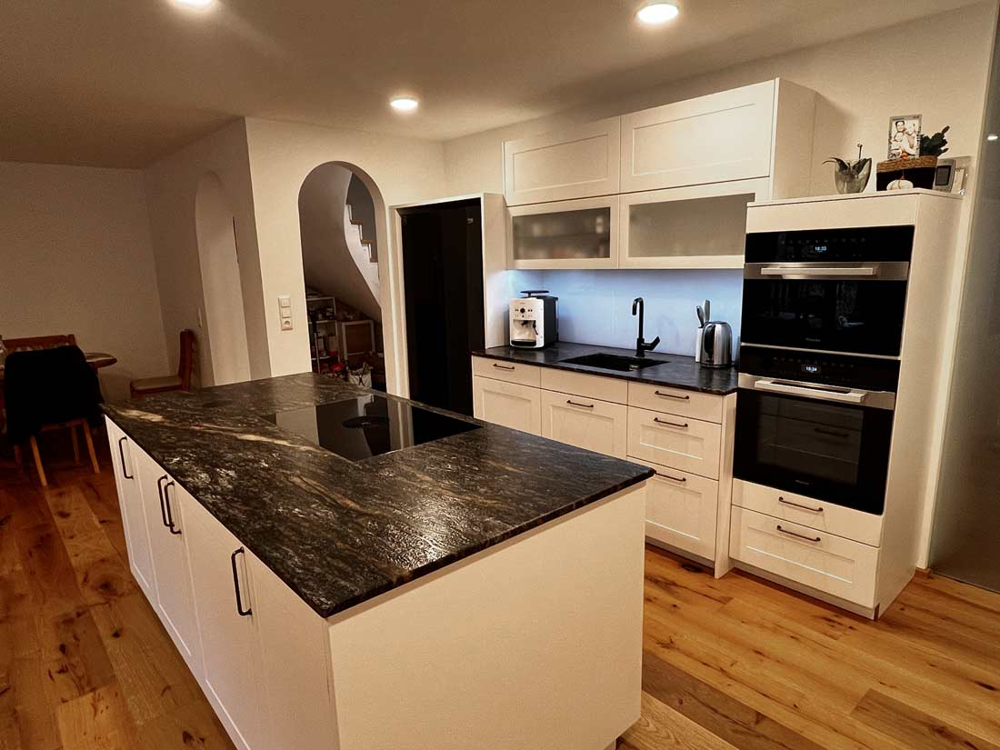
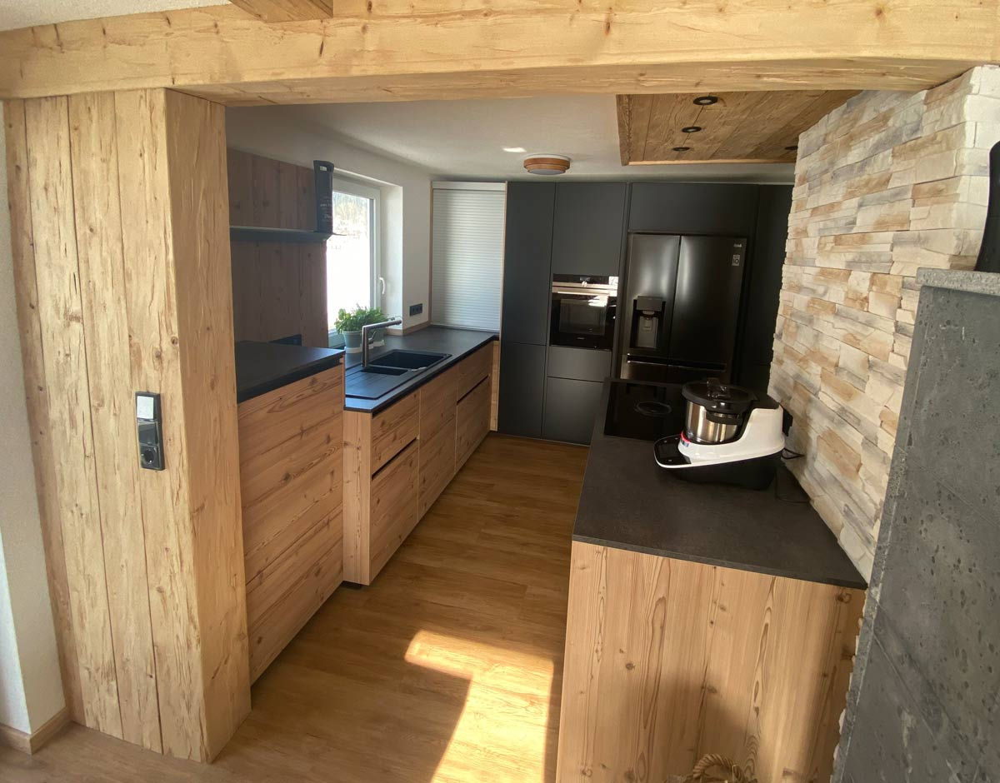
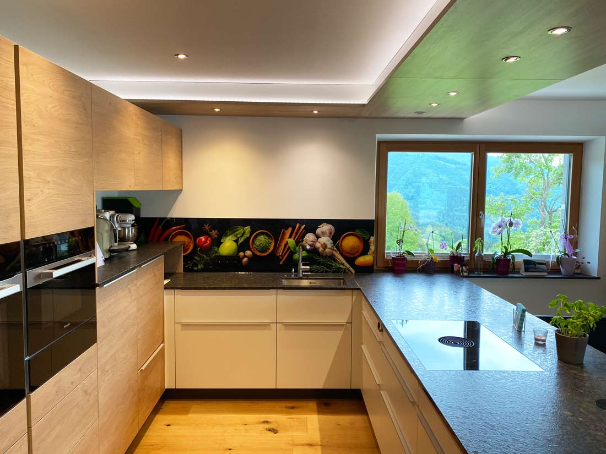
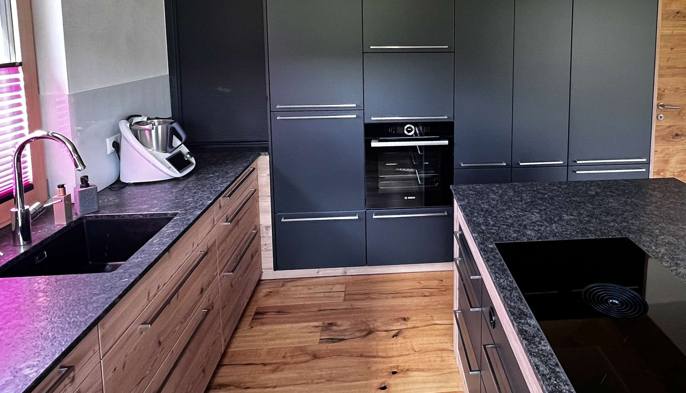
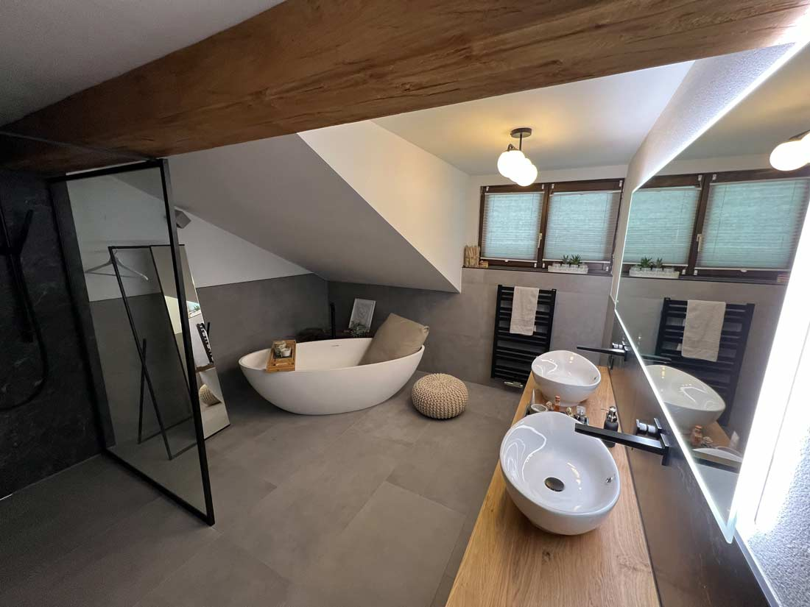
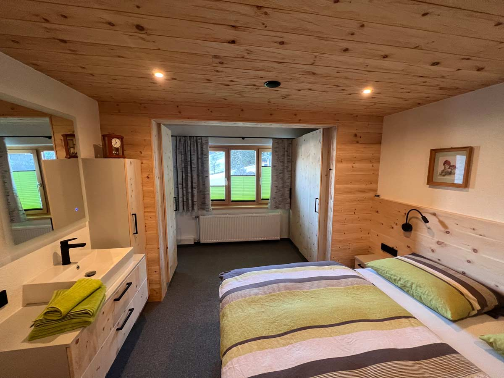

Küchen aus Gosau · fürs ganze Salzkammergut
Nicht organisieren. Nur noch einziehen.
Wir planen und bauen deine Küche – und kümmern uns um alles drumherum. Maurer, Installateur, Elektriker, Maler: Du hast einen Ansprechpartner statt fünf Baustellen.
4,96 von 5 aus 66 Bewertungen auf ProvenExpert

Kennst du das?
Du willst eine neue Küche. Keine Baustelle.
„Die alte Küche hat uns 25 Jahre lang für die Kinder gedient – jetzt will ich endlich eine, die zu uns passt, und ich hab keine Nerven mehr, mich mit fünf verschiedenen Handwerkern rumzuschlagen.“
- Fünf Firmen, fünf Terminkalender – und keiner davon ist deiner.
- Der Elektriker wartet auf den Maurer. Der Maler auf den Fliesenleger.
- Ihr kocht seit Wochen auf der Kochplatte im Wohnzimmer.
- Und läuft etwas schief, sagt jeder: „Dafür bin ich nicht zuständig.“
So machen wir das
Ein Ansprechpartner statt fünf Baustellen.
Wir verkaufen dir keine Küche und lassen dich dann mit dem Rest allein. Wir nehmen dir das ganze Projekt ab – vom ersten Gespräch bis zu dem Tag, an dem du zum ersten Mal darin kochst.
Wir hören zuerst zu
Bevor irgendjemand etwas plant, reden wir. Wie kocht ihr wirklich? Wer steht wo? Was hat euch an der alten Küche jeden Tag geärgert? Daraus wird die Planung – nicht aus einem Katalog.
Wir holen die anderen Gewerke
Maurer, Installateur, Elektriker, Maler: Wir stimmen die Termine ab, sagen jedem, was er wann braucht, und sind dabei, wenn gearbeitet wird. Du musst niemanden anrufen.
Und dann geht es schnell
Die Montage selbst dauert drei bis vier Tage – weil vorher alles vorbereitet ist. Danach ist Übergabe: sauber, aufgeräumt, fertig.
Ablauf
Was auf dich zukommt – in vier Schritten.
Damit du weißt, worauf du dich einlässt, bevor du anrufst.
-
Wir schauen uns die Küche an
Am liebsten dort, wo sie hinkommt. Wir nehmen Maß, hören zu und klären, was baulich geht und was nicht.
-
Du siehst deine Küche, bevor es sie gibt
Maßstabsgetreue Planzeichnungen und 3D-Ansichten. So lange, bis es passt – Änderungen in der Planung kosten nichts außer Zeit.
-
Wir übernehmen die Koordination
Wir holen die anderen Gewerke, legen die Reihenfolge fest und sind auf der Baustelle. Du bekommst einen Termin, keine Telefonliste.
-
Montage in drei bis vier Tagen
Sauber und staubarm gearbeitet, danach gemeinsame Übergabe. Und wenn später noch etwas ist: Wir gehen ans Telefon.
Unsere Arbeiten
Küchen, in denen seit Jahren jeden Tag gekocht wird.






Was Kunden sagen
Nicht von uns geschrieben. Nachlesbar, mit Namen.
„TOP Beratung, tadellose Ausführung und Baustellenbegleitung bis zum Übergabetermin. Allem in Allem ein sehr gutes Unternehmen wo man sich super gut aufgehoben fühlt.“
„Terminverlässlichkeit, sehr professionelle und rasche Arbeit der Monteure, sehr gutes Preis-Leistungsverhältnis, wir sind rundum zufrieden.“
„Beantwortet alle Anfragen. Kümmert sich auch um kleine Wünsche. Hat sehr freundliche und hilfsbereite Mitarbeiter. Ruft immer zurück.“
„Kompetente Beratung und Umsetzung von Wünschen. Schnelle Hilfe wenn man sie braucht. Kein aufdringlicher Verkauf.“
2023 ausgezeichnet als wertschätzender Arbeitgeber. Wer seine Leute gut behandelt, schickt dir auch die Richtigen ins Haus.
Wer das macht
Martin Schwaighofer, Tischlermeister.
Angefangen hat er als Tischlerlehrling in Gosau. Danach ging es hinaus: Hamburg, Kiel, Neuseeland, San Francisco. Und irgendwann wieder zurück ins Gosautal – mit dem Wunsch, es selbst zu machen.
Gedacht war das als Ein-Mann-Betrieb. Es kamen mehr Aufträge, als einer schaffen konnte. Heute sind wir ein junges Team aus Gosau, das Küchen, Möbel und Bäder baut – und dabei den ganzen Umbau mitdenkt, nicht nur das Möbelstück.
Was uns wichtig ist: ehrlich sagen, was geht und was nicht. Handschlagqualität statt Kleingedrucktem. Und Holz behandeln wie das, was es ist – ein lebendiger Werkstoff, aus dem Lebensräume werden.

Das Team: Martin und Heike, Andi, Daniel, Paul und Kevin – und Martina im Büro, die zurückruft, wenn du anrufst.
Womit wir arbeiten
Was wir nicht selbst bauen, kaufen wir dort, wo es hält.
Geräte, Beschattung, Fenster, Türen, Böden: Was nicht aus unserer Werkstatt kommt, kommt von Herstellern, bei denen wir wissen, wen wir anrufen – auch dann noch, wenn später einmal etwas ist.


Kurz gefragt
Das wollen die meisten vorher wissen.
Wie lange haben wir keine Küche?
Die Montage selbst dauert drei bis vier Tage. Wie lange die Phase davor dauert, hängt davon ab, was baulich passiert – das sagen wir dir nach dem ersten Termin verbindlich, nicht geschätzt.
Müssen wir die anderen Handwerker selbst suchen?
Nein. Genau das ist unser Punkt. Maurer, Installateur, Elektriker und Maler koordinieren wir. Du kannst auch deine eigenen Leute behalten – dann stimmen wir uns mit denen ab.
Wo arbeitet ihr?
Rund ums Salzkammergut, unser Sitz ist in Gosau. Wenn du unsicher bist, ob du noch im Gebiet liegst: ruf einfach an, dann wissen wir es in einer Minute.
Was kostet eine Küche bei euch?
Das kommt darauf an, was du willst – und wir raten hier keine Zahl ins Blaue. Nach dem ersten Gespräch bekommst du ein Angebot, in dem alles steht: Küche, Montage und die Arbeiten drumherum. Ohne Posten, die später noch dazukommen.
Was passiert beim Beratungsgespräch?
Wir reden. Über eure Küche, euren Alltag, euren Zeitplan. Kein Verkaufsgespräch – eine Kundin hat das mal so beschrieben: „Kein aufdringlicher Verkauf.“ Genau so halten wir es.
Gratis, ohne Gegenleistung
Die Küchen-Checkliste: 12 Fragen vor der Planung.
Noch nicht so weit für ein Gespräch? Dann nimm die Fragen mit, die wir im Beratungstermin ohnehin stellen. Zwei Seiten zum Ausdrucken – in Ruhe zu Hause durchgehen, bevor du dich irgendwo festlegst.
- Woran Küchenplanungen in der Sanierung am häufigsten scheitern.
- Welche Maße und Anschlüsse du vorher wissen solltest.
- Was in einem Angebot stehen muss, damit später nichts dazukommt.
Checkliste anfordern
Eine Zeile ausfüllen, fertig. Mehr als deine E-Mail-Adresse brauchen wir dafür nicht.
Der nächste Schritt
Vereinbare dein Beratungsgespräch
Schreib uns kurz, worum es geht. Wir melden uns innerhalb von zwei Werktagen und machen einen Termin aus – unverbindlich und ohne Verkaufsgespräch.
Lieber gleich reden?
06136 200 22
- office@schmez.at
- Adresse
- Austraße 22, 4824 Gosau
- Zeiten
- Mo–Fr 8–12 und 13–17 Uhr
- Gebiet
- Rund ums Salzkammergut